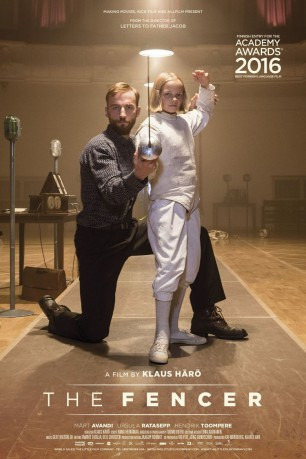

#3990 Die Kinder des Fechters
 
 IMDB-Wertung: 7.3 / 10
IMDB-Wertung: 7.3 / 10  Metascore: 0
Metascore: 0 
Fleeing from the Russian secret police because of his controversial past, a young Estonian fencer named Endel is forced to return to his homeland, where he begins to train a group of young children in the art of fencing. The past however catches up with him and Endel has to choose between letting his students down or putting his life in danger. The movie is partially based on the real life story of an Estonian fencer Endel Nelis (1925-1993).
Jahr: 2015
Dauer: 98 Minuten
FSK: 0
Land: Finnland Studio: Zorro FilmverleihTonspuren:
Untertitel:
Auflösung: 1080p (1920x804) Größe: 7905 MB
Genre: Drama, Sport, Geschichte
Regisseur: Klaus Härö
Drehbuch: Frank Kowalski
Soundtrack:
Darsteller:
- Lembit Ulfsak als Jaan's grandfather
- Märt Avandi als Endel
- Liisa Koppel als Marta
- Kai Nordberg als Judge
- Kirill Käro als Aleksei
- Ursula Ratasepp als Kadri
- Kaarle Aho als Judge
- Maria Klenskaja als Teacher
- Alina Karmazina als Armenian trainer
- Mikhail Pashchuk als Fencer from Moscow
- Joonas Koff als Jaan
- Maria Avdjushko als Clerk in Leningrad
- Tõnu Oja als Parent in the meeting
- Kaspar Tõnisson als Fencer
- Andres Lepik als Teacher
- Hendrik Toompere Sr. als Principal
- Raimo Pass als Officer
- Tatjana Manevskaja als Parent in the meeting
- Carmen Mikiver als Parent in the meeting
- Paul Laasik als Parent in the meeting
- Svetlana Tsirkova-Lozovaja als Head of jury
- Leida Rammo als Boarding house's hostess
- Elbe Reiter als Tiiu
- Anu Lamp als Parent in the meeting
- Boris Joffe als Head of jury
- Egert Kadastu als Toomas
- Darja Zabronok als Fencer
- Helle Kuningas als Parent in the meeting
- Jaak Prints als Principal's assistant
- Anneli Proosväli als Fencer
- Ahti Puudersell als Parent in the meeting
- Svetlana Trynova als Fencer
- Piret Kalda als Jaan's mother
- Aleksander Luka als Fencer
- Karlote Karm als Fencer
- Alla Mirovidova als Trainer for Moscow fencers
- Jevgeni Karavajev als Head of jury
- Aime Nikopensiu als Parent in the meeting
- Mimosa Wagner als Girl in post office
- Aino Joa als Parent in the meeting
- Kaie Mihkelson als Postal clerk
- Merle Kappel als Parent in the meeting
- Krettel Maide als Fencer
- Merike Püüding als Parent in the meeting
- Romel Hendrik Rautam als Fencer
- Liivi Prints als Parent in the meeting
- Ingrika Tuulik als Fencer
- Rihard-Reno Germ als Fencer
- Sirje Päästel als Parent in the meeting
- Uudo Laane als Parent in the meeting
Datei: X:\2015(G-M)\Kinder des Fechters, Die (2015, FSK0, 1920x804).mkv seit 10.07.2016
Festplatte: HD 2015(A-Z)
 Es gibt insgesamt 129 Filme in der Gruppe '2015(G-M)'
Es gibt insgesamt 129 Filme in der Gruppe '2015(G-M)'